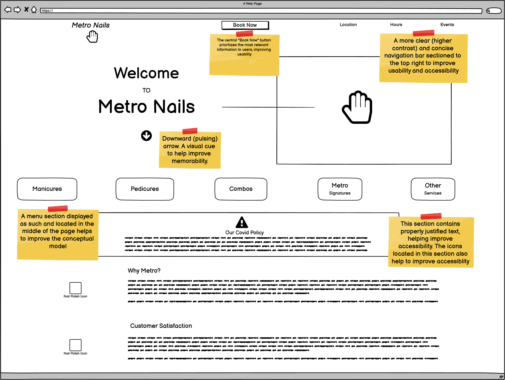
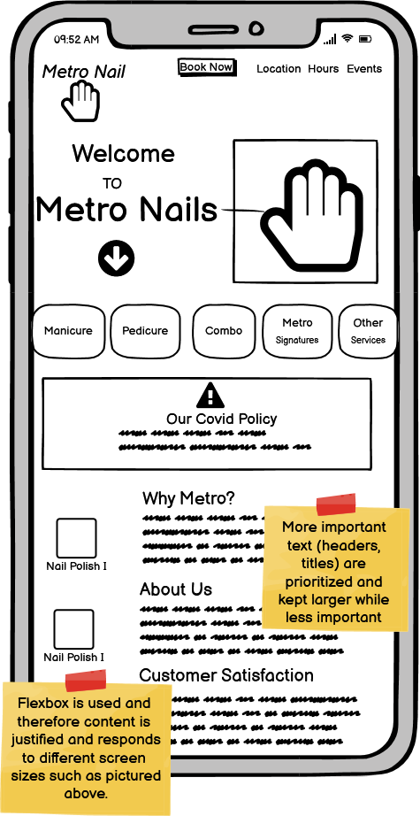
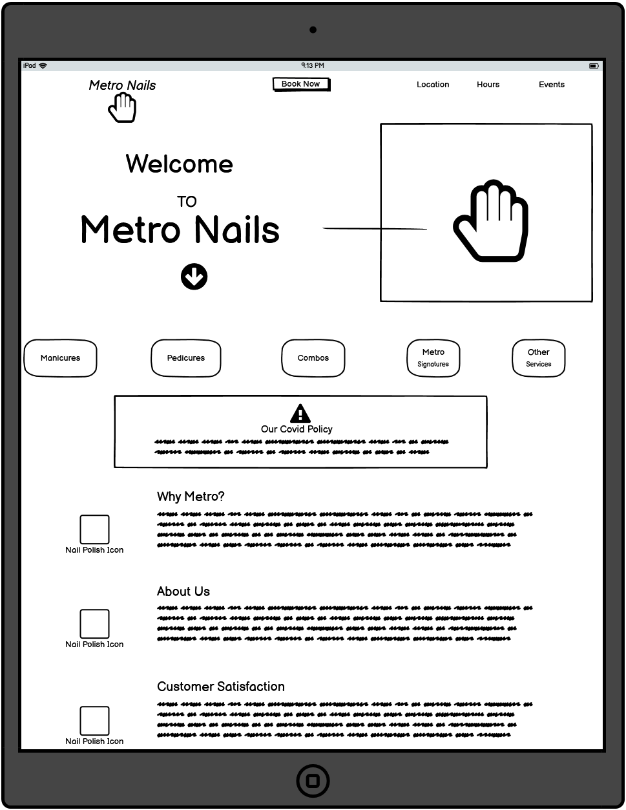
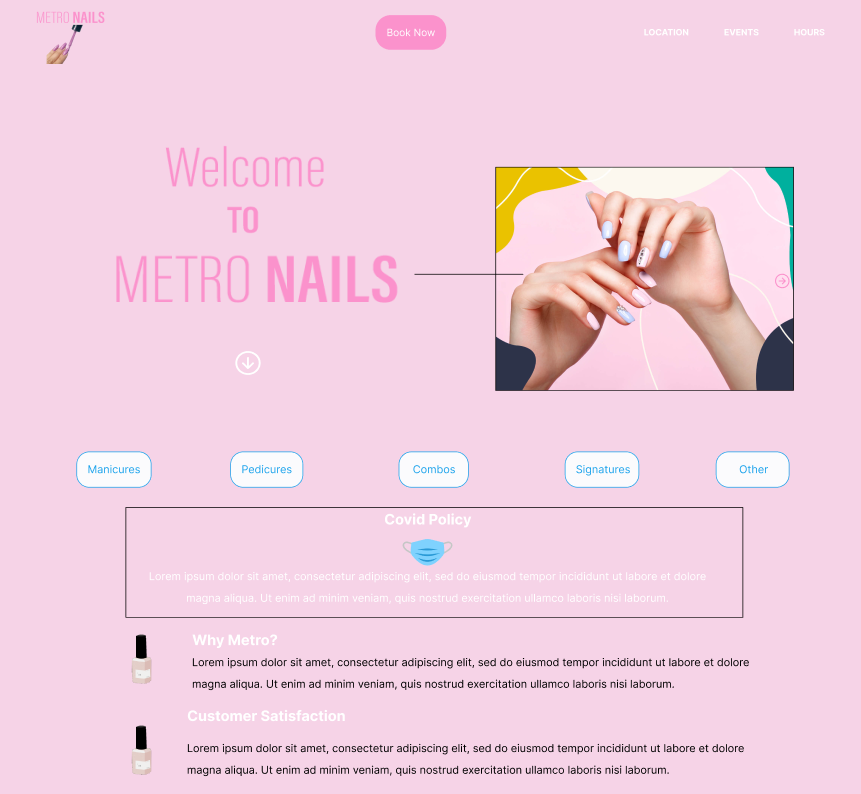
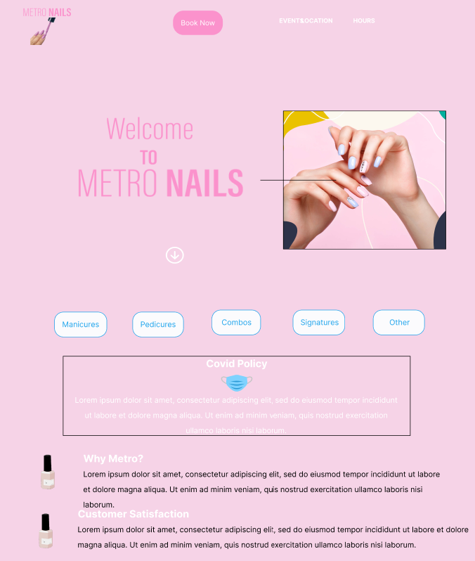
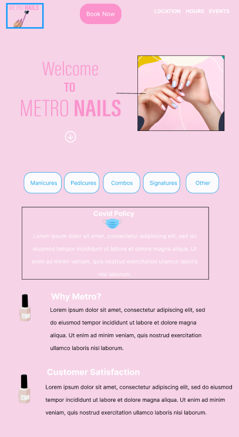

DON'T SHOW
Identifying Usability Problems
Overall, the Metro Nails landing page did not test well on usability. Explore the infographic below to look at my full analysis or look at it here!
DON'T SHOW
Lo-Fi
After exploring the usability of the current Metro Nails site, I went to Balsamiq Wireframes to create some lofi prototypesBelow are the three lo-fi prototypes, created using Balsamiq Wireframes. The of a new Metro Nails site that were intitally designed for a desktop, iphone and ipad respectively. The prototypes are annotated with notes that mark the usability improvements.
Browser:
Phone:
Tablet :
DON'T SHOW
Visual Style Guide
After having constructed my lo-fi prototypes I created a visual style guide prior to constructing my hi-fi prototypes. The visual Style Guide is located below or you can find it here!

DON'T SHOW
Hi-Fi
The final step before creating the actual redesign was to do my hi-fi prototyping. Your can find the hi-fi prototypes for a browswer, tablet and phone below.
Browser:
Tablet:
Phone:
DON'T SHOW
Websites
Linked below to the left is the redesigned Metro Nails landing page and the original to the right.